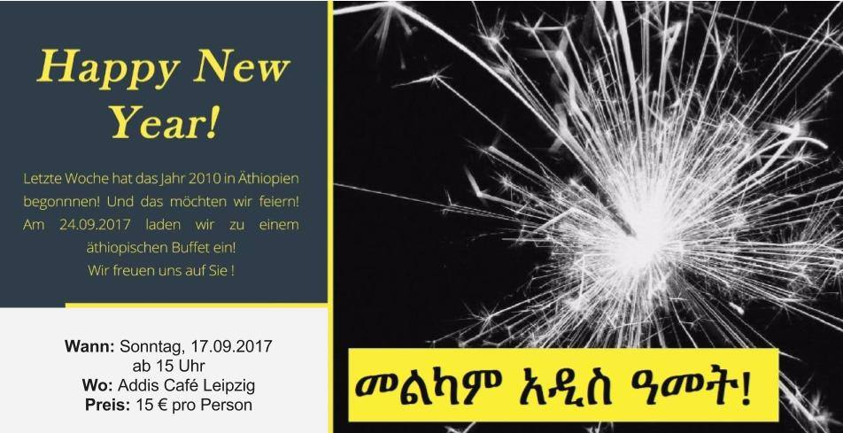
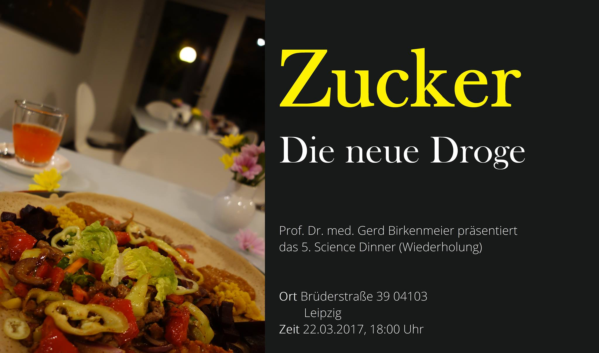

Frohes neues Jahr! Feiert mit uns zusammen das neue äthiopische Jahr! Wir laden Sie herzlich dazu ein, am 17.09.2017 im Addis Café das Jahr 2010 bei einem äthiopischen Buffet zu begrüßen. Am Abend findet eine traditionell äthiopische Kaffezeremonie statt. Das Buffet wird um 16 Uhr eröffnet. Wir freuen uns auf euch ! Melkam addis amet!
Das Addis Café präsentiert sein erstes Science-Dinner! Am 27.09.17. laden wir Sie herzlich ein zuerst am üppigen äthiopischen Buffet teilzunehmen. Im Anschluss daran gibt es einen Vortrag zu einem interessanten wissenschaftlichen Thema.
Als 1. Referenten konnten wir Prinz Dr. Asfa-Wossen Asserate, Großneffe des letzten äthiopischen Kaisers Haile Selassie gewinnen!
Thema : Über das Christentum in Äthiopien
Am 27. September wird traditionell das Meskel Fest, die Auffindung des Kreuzes Jesu in Äthiopien gefeiert. Dies ist eines der bedeutendsten christlichen Feiertage in diesem ostafrikanischen Land. Folgen Sie bei authentischen äthiopischen Speisen den interessanten Ausführungen des Buchautors, Unternehmensberaters und Nachfahren des äthiopischen Kaisers Haile Selassie. Vielleicht erfahren Sie auch, ob sich die Bundeslade mit den 10 Geboten, die Moses von Gott bekam, wirklich in Äthiopien befindet.
Ablauf:
18:00-20:00Uhr Buffet
20:15-21:30Uhr Vortrag
Danach bleibt Zeit für interessante Diskussionen!
Wir erlauben uns, für das Buffet und den Vortrag einen Unkostenbeitrag in Höhe von 20,00€ pro Person zu berechnen.
Bitte melden Sie sich online oder telefonisch im Voraus.
E-Mail: info@addis-cafe.de
Website: www.addis-cafe.de
Facebook: @addiscafeLpz
Tel.: 0341 69840204
Zum 2. Science Dinner laden wir Sie herzlich ein. Es beginnt mit einem üppigen
authentischen äthiopischen Buffet. Anschließend verfolgen Sie einen Vortrag zu einem
höchst aktuellen Thema:
Die Glyphosat-Lüge – Wie wir uns selbst sterblicher machen
Referentin: Frau Prof. Dr. vet. Monika Krüger
Frau Prof. Monika Krüger, Bakteriologin, Mykologin und Teilnehmerin des MonsantoTribunals,
zeigt in beeindruckender Weise, wie das Herbizid Glyphosat unsere Umwelt
vergiftet, über pflanzliche und tierische Lebensmittel in den Menschen gelangt und
gesundheitliche Schäden wie Mißbildungen und Krebs verursacht. Ist unsere Ernährung bei
steigendem Wachstum der Weltbevölkerung überhaupt ohne Pflanzenschutzmittel für die
nächsten Dekaden gesichert? Das für und wider bei der Beurteilung dieser Fragen wird von
Frau Prof. Krüger kritische beleuchtet.
Ablauf:
18:00-20:00 Uhr Buffet
20:15-21:30 Vortrag mit anschließender Diskussion
Wir erlauben uns einen Kostenbeitrag von 20,00€ pro Person zu erheben.
Anmeldung:
Email:info@addis-cafe.de (bevorzugt!)
Mobile: 01735749886
Liebe Freunde des Addis-Cafe, Aufgrund einer starken Nachfrage wollen wir den Zucker-Vortrag wiederholen. Dazu laden wir Sie herzlich ein. Es beginnt mit einem üppigen authentischen äthiopischen Buffet. Anschließend verfolgen Sie einen Vortrag zu dem Thema: Zucker – die neue Droge! Wie gefährlich ist Zucker wirklich? Referent: Medizinalrat Prof. Dr. med. habil. Gerd Birkenmeier Prof. Birkenmeier, Arzt, Biochemiker und Krebsforscher erklärt, wie wir unbemerkt übermäßige Mengen von Zucker zu uns nehmen. Er zeigt, wie die Zuckerindustrie die gesundheitsgefährdende Wirkung des Zuckers herunterspielt. Die biochemischen Hintergründe der schädigenden Effekte des Zuckers auf unsere Gesundheit wird in für jedermann verständlichen Worten und Abbildungen erklärt. Es wird dargelegt, wieso Zucker dick macht, Fett aber nicht, warum Krebszellen Zucker mögen und Zucker das Altern beschleunigt. Sie erfahren auch, dass wir nicht auf Süßes verzichten müssen. Ablauf: 18:00-19.30 Uhr Buffet 20:00-21:30 Vortrag mit anschließender Diskussion Wir erlauben uns einen Kostenbeitrag von 20,00€ pro Person zu erheben. Anmeldung: Email:info@addis-cafe.de (bevorzugt!) Tel: 0341 69840204 Mobile: 01735749886 Wir freuen uns auf Euren/Ihren Besuch. Prof. Gerd Birkenmeier und Assefa Addis-Cafe
Zum 6. Science Dinner laden wir Sie herzlich ein. Es beginnt mit einem üppigen
authentischen äthiopischen Buffet. Anschließend verfolgen Sie einen Vortrag zu dem folgenden Thema:
Was ist los in unserem Darm – Werden wir von Bakterien beherrscht?
Referent: Medizinalrat Prof. Dr. med. habil. Gerd Birkenmeier
Prof. Birkenmeier, Arzt, Biochemiker und Krebsforscher erklärt, wie wir unbemerkt von
unseren kleinsten Mitbewohnern, den Bakterien, beherrscht werden. Allein unser Darm
beherbergt 1-1.5 kg Bakterien. Dies übersteigt die Anzahl unserer eigenen Körperzellen um
das 10fache. Mit einer Fläche von der Größe eines Fußballfeldes ist unser Darm das größte
immunologische Organ, das uns vor Umweltgiften schützt und gleichzeitig Millionen von
Mikroorganismen, die sogenannten Symbionten (gute) und Pathobionten (böse)
beherbergt. Bei Gesunden herrscht Waffenstillstand zwischen den beiden. Jede Störung
dieses Zustandes sei es durch Stress, körperlich Überlastung oder falsche Ernährung
verursacht Krieg. Dies führt unweigerlich zum Eindringen von gefährlichen Mikroorganismen
und deren Gifte in unseren Körper. Die dadurch verursachten Entzündungen können
Ausgangspunkt für viele Erkrankungen wie Krebs, Alzheimer. Depression und Rheuma sein.
Ablauf:
18:00-19:30 Uhr Buffet
20:00-21:30 Vortrag mit anschließender Diskussion
Wir erlauben uns, einen Kostenbeitrag von 20,00€ pro Person zu erheben.
Anmeldung:
Email:info@addis-cafe.de (bevorzugt!)
Mobile: 01735749886
Zum 7. Science Dinner laden wir Sie herzlich ein. Es beginnt mit einem üppigen authentischen äthiopischen Buffet. Anschließend verfolgen Sie einen Vortrag zu dem Thema:
Depression: Es begann mit Schlafstörungen, Schwindel und Angstattacken...
Referentin: Privatdozentin Dr. med. Maria Strauß aus der Klinik und Poliklinik für Psychiatrie und Psychotherapie der Medizinischen Fakultät Leipzig erklärt, wie sich eine Depression äußert und klärt über die Behandlungsmöglichkeiten auf.
Depressionen gehören zu den häufigsten und am meisten unterschätzen Erkrankungen, wenn man bedenkt, dass jeder 5. Bundesbürger einmal in seinem Leben an einer Depression erkrankt. Depressionen gehen wie kaum eine andere Erkrankung mit hohem Leidensdruck einher und beeinträchtigen die Patienten und Angehörigen in ihrer gesamten Lebensführung.
Frau Dr. Strauß berichtet über neue wissenschaftliche Erkenntnisse zu den möglichen Ursachen von Depressionen und zeigt, wie man sie erfolgreich
behandeln kann.
Ablauf: 18:00-19:30 Uhr Buffet
20:00-21:30 Vortrag mit anschließender Diskussion
Wir erlauben uns ,einen Kostenbeitrag von 20,00€ pro Person zu erheben.
Anmeldung:
Email:info@addis-cafe.de (bevorzugt!)
Mobile: 01735749886
Die starke Nachfrage hat uns veranlasst, die Darmbakterien-Veranstaltung zu wiederholen, wozu wir Sie herzlich einladen.
Es beginnt mit einem üppigen
authentischen äthiopischen Buffet. Anschließend verfolgen Sie einen Vortrag zu dem folgenden Thema:
Was ist los in unserem Darm – Werden wir von Bakterien beherrscht?
Referent: Medizinalrat Prof. Dr. med. habil. Gerd Birkenmeier
Prof. Birkenmeier, Arzt, Biochemiker und Krebsforscher erklärt, wie wir unbemerkt von
unseren kleinsten Mitbewohnern, den Bakterien, beherrscht werden. Allein unser Darm
beherbergt 1-1.5 kg Bakterien. Dies übersteigt die Anzahl unserer eigenen Körperzellen um das 10fache. Mit einer Fläche von der Größe eines Fußballfeldes ist unser Darm das größte
immunologische Organ, das uns vor Umweltgiften schützt und gleichzeitig Millionen von Mikroorganismen, die sogenannten Symbionten (gute) und Pathobionten (böse)
beherbergt. Bei Gesunden herrscht Waffenstillstand zwischen den beiden. Jede Störung
dieses Zustandes sei es durch Stress, körperlich Überlastung oder falsche Ernährung
verursacht Krieg. Dies führt unweigerlich zum Eindringen von gefährlichen Mikroorganismen
und deren Gifte in unseren Körper. Die dadurch verursachten Entzündungen können
Ausgangspunkt für viele Erkrankungen wie Krebs, Alzheimer. Depression und Rheuma sein.
Ablauf:
18:00-19:30 Uhr Buffet
20:00-21:30 Vortrag mit anschließender Diskussion
Wir erlauben uns, einen Kostenbeitrag von 20,00€ pro Person zu erheben.
Anmeldung:
Email:info@addis-cafe.de (bevorzugt!)
Mobile: 01735749886